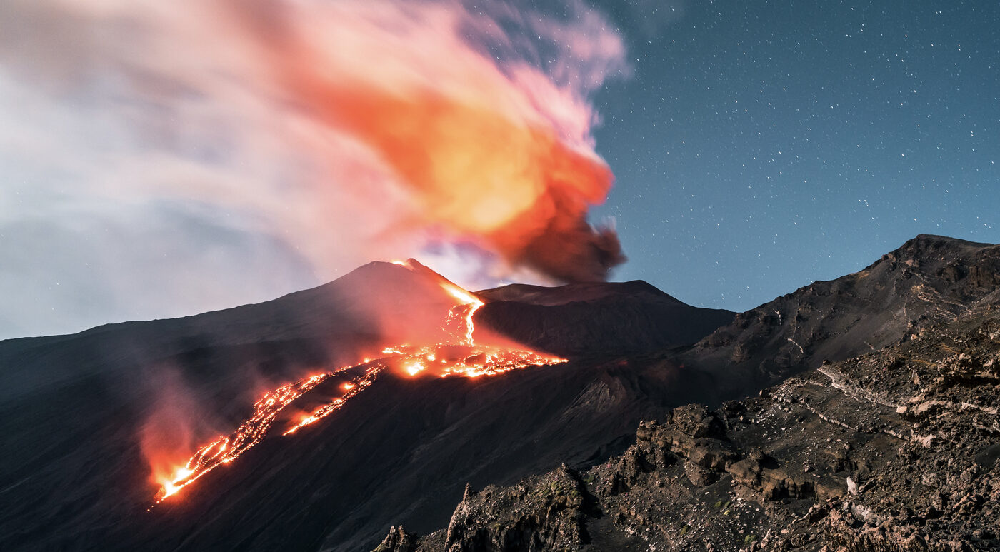
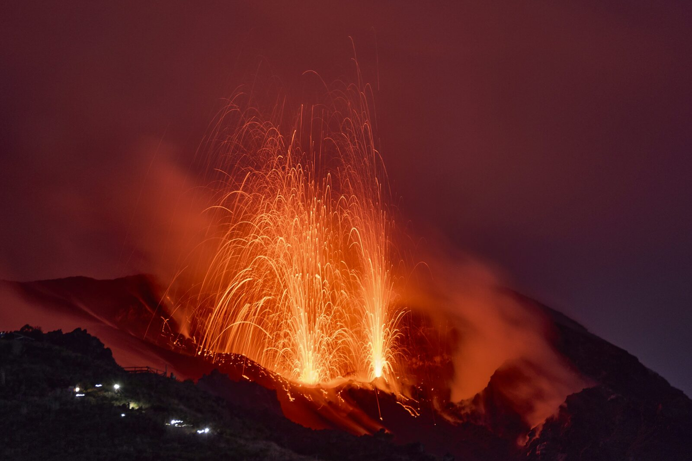

- Lave Très fluide et pauvre en silice.
- Éruption Calme et effusive.
- Caractéristique La lave s'écoule facilement en de longues
rivières de feu sans produire d'explosions violentes, formant des volcans aux
pentes douces (volcans boucliers).

- Lave Fluide à moyennement visqueuse.
- Éruption Mixte, à la fois effusive et explosive.
- Caractéristique Il se produit des coulées de lave
accompagnées d'explosions régulières qui projettent des fontaines de lave,
des cendres et des bombes volcaniques.
03
Le type vulcanien
Éruption très explosive

- Lave Visqueuse et riche en gaz.
- Éruption Très explosive.
- Caractéristique Le magma obstrue la cheminée du volcan.
La pression monte jusqu'à provoquer une violente explosion qui projette des
nuages de cendres sombres et des blocs de pierre incandescents.

- Lave Extrêmement visqueuse.
- Éruption Violente et destructrice.
- Caractéristique Un « bouchon » de lave solide se
forme au sommet. Sous la pression, une explosion latérale ou verticale pulvérise
ce bouchon et génère des nuées ardentes (des avalanches de gaz brûlants, de
cendres et de roches) qui dévalent les pentes à grande vitesse.
Du plus calme au plus violent
Plus une lave est visqueuse, plus les gaz restent piégés à l'intérieur :
la pression augmente et l'éruption devient explosive. À l'inverse, une lave très
fluide laisse les gaz s'échapper en douceur et s'écoule tranquillement.
Ces quatre familles portent le nom de volcans célèbres : le Kīlauea à Hawaï,
le Stromboli en Italie, le Vulcano dans les îles Éoliennes et la montagne Pelée
en Martinique.
🔗 Consulter le dossier complet sur Observaterre.fr
lien externe — nouvelle fenêtre